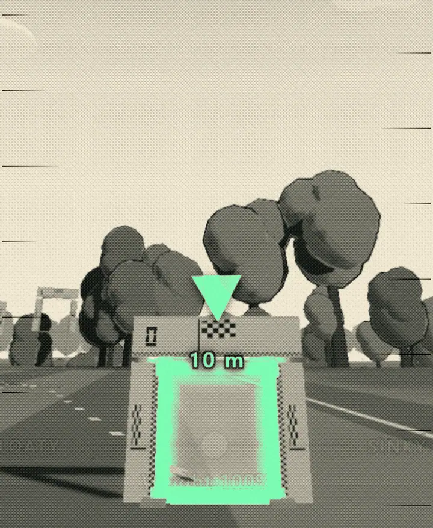
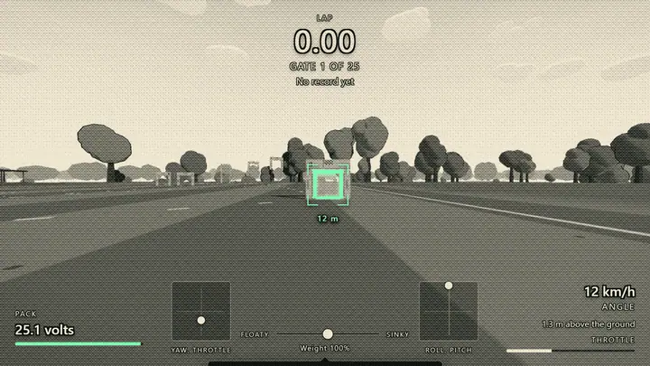
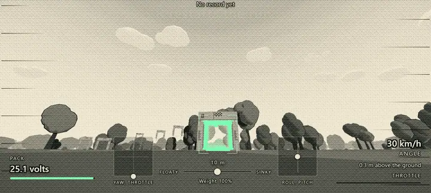
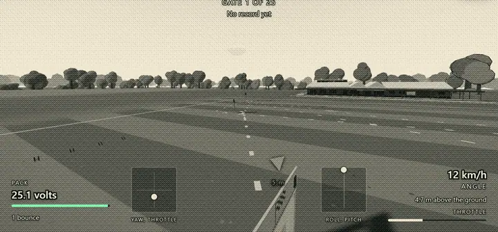
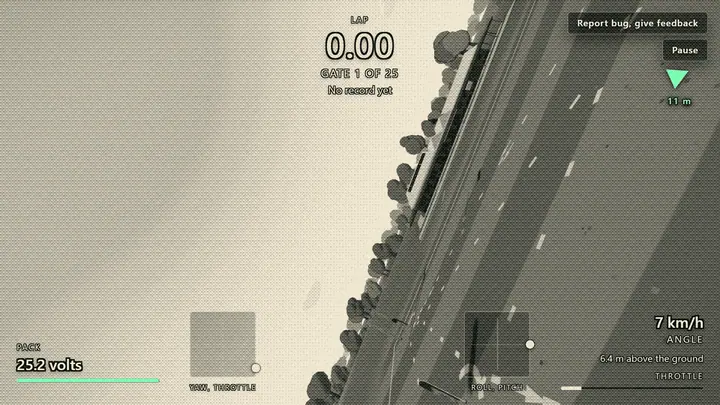
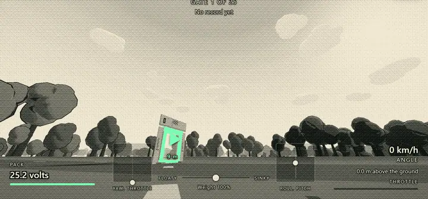
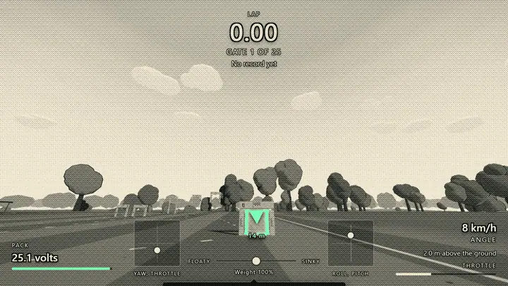

WEBFPV
andAgainFPV. The gate. 2 October 2026.

The gate is right there. It is close. Nobody speaks.

The gate is a small opening ahead.

The opening grows.

The approach is low and fast.

The line misses.

The horizon tips.

The gate is still there. Too fast.

The gate waits.
Next. The next chapter is not drawn.
Fly WebFPV